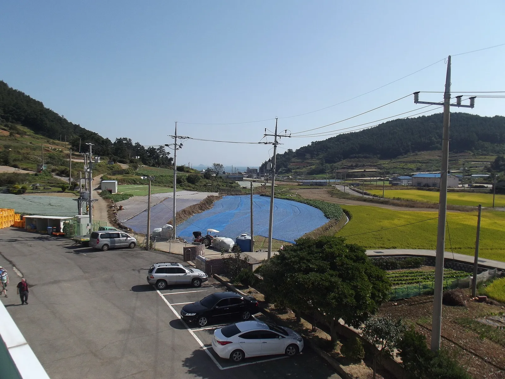
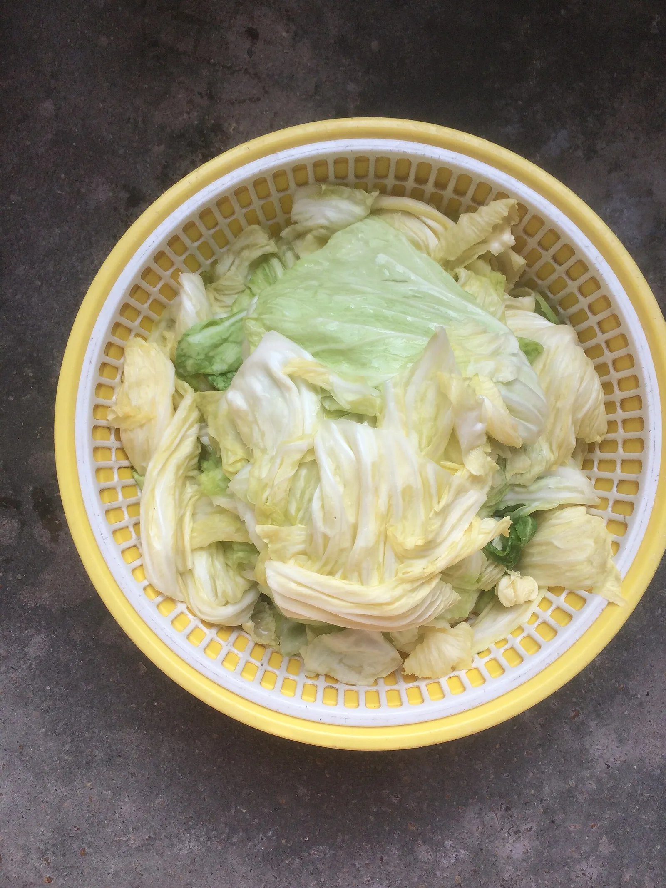
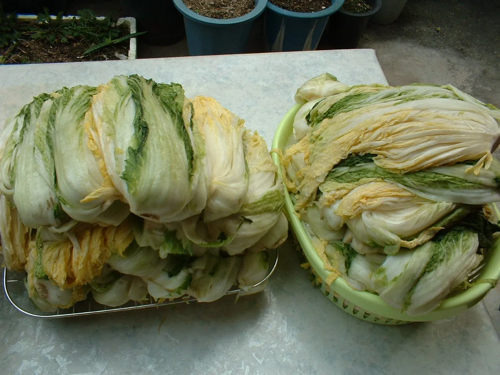

▲ 김장철을 앞두고 산지별 절임배추 가격과 특징을 비교했다
11월이 되면 포털 검색창에 '절임배추 가격'이 오르내리기 시작한다. 배추 한 포기 값이 뉴스에 나올 정도로 오르내리는 해가 반복되면서, 아예 산지에서 절인 배추를 직거래로 받는 집이 늘고 있다. 문제는 산지마다 내세우는 특징과 가격대가 다르다는 점이다. 해남은 '전국 최대 겨울배추 산지'를 내세우고, 괴산은 절임배추로 이름난 지역이고, 평창을 비롯한 강원 고랭지는 '해발 500m 이상에서 자란 배추'를 강조한다. 김장을 앞두고 알아두면 좋을 산지별 특징과 가격, 직거래 방법을 정리했다.
1. 해남 — 전국 최대 겨울배추 산지

▲ 김장용 배추가 자라는 산지 농경지 풍경 ⓒ Wikimedia Commons
전남 해남군은 겨울배추 재배로 이름난 산지다. 온화한 남해안 기후 덕분에 겨울에도 배추를 노지 재배할 수 있어, 해남 겨울배추는 2006년 1월 국립농산물품질관리원 지리적표시 제11호로 등록됐다. 주산지는 문내면을 비롯해 황산면·화원면·산이면 등지로 알려져 있다. 해남군은 1991년부터 겨울배추를 절임배추 형태로 상품화해 판매해왔다.
해남 겨울배추의 특징으로는 추운 날씨에 얼었다 녹기를 반복하며 탄수화물이 당분으로 바뀌어 맛이 달고 부드러워진다는 점이 꼽힌다. 문내면 등지에서는 겨울배추로 봄철에 다시 김장을 하는 이른바 '새봄 새 김치 담그기' 행사가 열리기도 한다. 직전 시즌인 2025년 사례를 보면 온라인 직거래 기준 해남 절임배추 20kg은 대략 4만2500원~4만4000원대에서 판매됐다. 2026년 시즌 공지 가격은 이 기사 작성 시점(9월)에는 아직 나오지 않았으며, 통상 예약 판매가 시작되는 10~11월에 지자체·농가별로 공지된다.
2. 괴산 — 절임배추로 이름난 충북 산지
충북 괴산군은 절임배추 산지로 특히 잘 알려져 있다. 군 농업 관련 페이지에서도 '시골절임배추'를 대표 특산품으로 소개하고 있으며, 지역 농가와 온라인몰을 통한 직거래 판매가 활발하다. 다만 이번 조사에서는 괴산군의 대표 가을 축제가 절임배추 축제가 아니라 괴산고추축제(2026년 9월 3~6일 개최, 세척 건고추 600g당 1만6000원)라는 점이 확인됐다. 절임배추 관련 행사는 고추축제와 별도로 진행되거나, 농가 단위 직거래 중심으로 운영되는 것으로 보인다. 괴산군청이 운영하는 온라인 특산품몰 '괴산장터'의 2025년 시즌 판매 사례를 보면 농가별로 20kg 기준 4만5000원(효성농원)에서 5만6000원(모단농장)까지 가격 편차가 있었고, 10kg 단위(농사꾼과아지매)는 3만5000원에 판매됐다. 2026년 시즌 가격은 9월 현재 아직 공지되지 않았다.
괴산군청 시골절임배추 페이지에서 확인 가능
▲ 소금에 절인 배추. 김장 직전 단계로, 산지에서 미리 절여 배송하는 절임배추 상품의 형태다 ⓒ Wikimedia Commons
3. 평창·강원 고랭지 — 해발 500m 이상 배추의 특징

▲ 소금물을 뺀 절임배추 무더기. 산지에서 이런 상태로 세척·포장해 20kg 단위로 직거래 배송한다 ⓒ Wikimedia Commons
강원도 평창을 비롯한 고랭지 지역은 해발 500m 이상에서 자란 배추를 원칙으로 내세운다. 일교차가 크고 서늘한 기후에서 자란 고랭지 배추는 속이 단단하고 아삭한 식감이 특징으로 꼽힌다. 평창에서는 절임배추와 양념을 함께 구매해 현장에서 김장을 완성하는 체험형 '평창 고랭지 김장 축제'가 운영되며, 참가자들이 배추·양념을 사서 즉석에서 김장 담그기를 체험하는 방식이다. 최근 사례를 보면 절임배추 10kg(절임배추 7kg+양념 3kg)이 6만8000원, 프리미엄 구성은 7만8000원 수준으로 책정된 바 있다. 순수 절임배추만 기준으로 보면 20kg에 6만원 안팎으로, 세 산지 중 상대적으로 가격대가 높은 편이다. 다만 대형마트 사전예약 프로모션에서는 해남·괴산·평창 산지를 선택하는 20kg 상품이 카드 할인 적용 시 3만원대까지 낮아지는 경우도 있어, 산지 직거래가와 마트 프로모션가 사이에 차이가 있을 수 있다는 점은 참고할 필요가 있다.
평창 고랭지 김장 축제 홈페이지에서 확인 가능4. 산지별 가격·특징 한눈에 비교
세 산지 모두 20kg 기준으로 비교하면 가격 차이가 뚜렷하게 나타난다. 아래 표는 온라인 직거래·마트 프로모션 가격 등 여러 사례를 종합한 대략적인 가격대로, 실제 구매 시점의 물량과 배추 시세에 따라 달라질 수 있다는 점을 감안해야 한다.
| 산지 | 핵심 특징 | 가격대(20kg) | 비고 |
|---|---|---|---|
| 해남(전남) | 지리적표시 제11호, 전국 대표 겨울배추 산지 | 약 3만~5만원대 | 1991년부터 절임배추 상품화 |
| 괴산(충북) | 절임배추로 특히 유명, 군 특산품몰 직거래 | 약 3만5000~5만6000원대 | 대표 가을축제는 고추축제(9월) |
| 평창 등 강원 고랭지 | 해발 500m 이상 재배, 아삭한 식감 강조 | 약 6만원 안팎 | 체험형 김장축제 운영, 양념 포함 시 더 비쌈 |
※ 위 가격은 직전 시즌인 2025년 온라인 직거래·마트 프로모션 사례를 종합한 참고치다. 2026년 시즌 실제 공지 가격은 지자체·농가별로 통상 10~11월에 확정되므로, 구매 전 각 특산품몰에서 최신 가격을 확인해야 한다. 정확한 도매 시세는 농산물유통정보(KAMIS)에서도 확인할 수 있다.
5. 직거래 신청, 이렇게 준비하면 된다
세 산지 모두 지자체 특산품몰이나 농가 직영 온라인몰을 통해 사전 예약 방식으로 절임배추를 판매한다. 공통적으로 확인해야 할 사항은 다음과 같다. 첫째, 배송 가능 시기다. 절임배추는 신선도가 중요해 대부분 11월 중하순부터 순차 배송되며, 예약이 몰리는 시기에는 원하는 날짜에 받기 어려울 수 있어 일찍 신청하는 것이 유리하다. 둘째, 포기 수와 중량 표기를 꼼꼼히 확인해야 한다. 같은 20kg이라도 포기 수(보통 7~9포기)가 다르면 실제 체감하는 양이 달라진다. 셋째, 무료배송 여부와 도서산간 추가 배송비 등 배송 조건도 산지마다 다르므로 주문 전 확인이 필요하다.
✅ 김장 절임배추 산지별 비교, 정리
· 해남: 지리적표시 제11호 겨울배추 산지, 20kg 3만~5만원대
· 괴산: 절임배추로 이름난 충북 산지, 20kg 3만5000~5만6000원대, 대표 축제는 고추축제(9월)
· 평창 등 강원 고랭지: 해발 500m 이상 재배, 20kg 6만원 안팎, 체험형 김장축제 운영
· 절임배추는 대부분 11월 중하순 배송, 포기 수·중량·배송비 조건을 미리 확인할 것
· 정확한 시세는 농산물유통정보(KAMIS)나 각 지자체 특산품몰에서 최신 정보로 재확인 필요